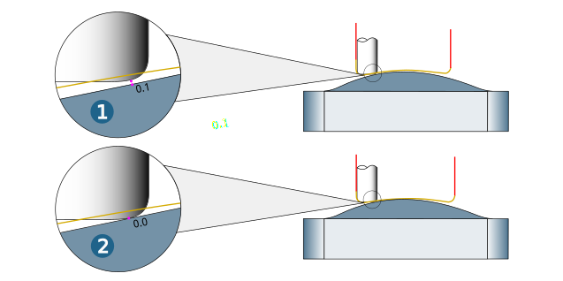

Define tool in a job
-
Create the required job and switch to the Tools dialogue page.
-
Select the tool type (1) and a defined tool (2).
 |
 |
Select NC tool from external tools database. |
|
Create a new document tool |
|
|
Edit a document tool |
Turning with turret
 |
Available if a machine with turret for turning jobs is defined in the job list. Only the mounted tools are displayed in the tool selection list. |
|
Available if a machine with turret for turning jobs is defined in the job list. All defined tools are displayed in the tool selection list. |
Cutting profile
Technology data defined for the tool used in the job is displayed in the cutting profile.
Tools included in a tool series
Profile mode: The cutting profile parameters are defined in the technology template of the tool series. For information on creating a tool series, see section → .
Select the profile mode Static (compatible) if a type of cut suitable for machining is available for the tool. The parameters of the cutting profile correspond to the standard parameters of the tool.
Type of cut: The type of cut is taken from the series definition of the tool. This is defined in the tool database for the material used.
Select the Manual profile mode if no suitable type of cut is available for the tool. The parameters of the cutting profile correspond to the standard parameters of the tool.
In addition, in profile mode Manual it is possible to use the technology of any available type of cut. To do this, select the desired type of cut from the list of cut types.
When switching from profile mode Static (compatible) to profile mode Manual, the parameters of the previously set type of cut are transferred to the cutting profile.
Tools that are not included in a tool series
Usage: If the tool does not have any cutting profiles stored for the material selected in the job list, the Invariant cutting profile is used.
If the same material as in the job list is defined and multiple usages are defined, then these may be selected in the Cutting profile.
Use formula: If technology parameters for document tools are defined by means of a formula, the formula and the respective value of the parameter are displayed and saved.
Meaning of the icons
(1) The value in the cutting profile corresponds to the value in the technology data of the tool. The value can be changed with a factor. To do so, select the field and enter the required factor.
(2) The value in the cutting profile is adjusted by a factor.
(3) The value in the cutting profile has been adjusted and is no longer linked to the technology data of the tool. Place the mouse pointer over the changed value to display the value of the technology data.
(4) The value in the cutting profile has exceeded the limit defined in the technology data and was automatically reset to the limit.
(5) Click the button to remove the link between the value in the cutting profile and the technology data value. The cutting profile value can now be adjusted as required without changing the value in the technology data and vice versa.
(6) Click the button to restore the link between the cutting profile and technology data. The value in the cutting profile is then overwritten again by the value in the technology data.
Location
Only available for Turning tools. Select the desired location under Name. A location comprises a set of the following parameters: tool angle, tool reference, cutting edge position, and reference angle.
Tool reference
Enable: Select the checkbox and select a defined reference point under Name. Applies only to T-slot cutters, for which two reference points (Tip and Disc top) are available by default.
Tool reference: The reference point defined in the tool dialog will be displayed, but cannot be edited.
Frame
|
Get preselection: Preselect a frame or origin from the list of frames/origins for job definition. |
|
 |
Define frame |
 |
Change frame |
Free angle: Defines the minimum angle to be maintained between the tool insert and the calculated toolpath (1). Defining a free angle automatically calculates the tool plunge angle. (2) Turning contour, (3) Turning model.

Free geometry
Use free tip geometry for collision check: Enable if the free tip geometry (1) and not the parametric tip geometry (2) should be used to calculate the toolpath, for collision checking and simulation.
|
Example |
(A) Function not enabled, the tool geometry is in collision with the model geometry. (B) Function enabled, no toolpath generated due to collision of the model geometry with the tool geometry. |
|
|
||
Supported cycles
The Use free tip geometry for collision check function is currently available for the following cycles: Contour Milling on 3D Model, Playback Milling and Plunge Milling.
Use free tip geometry for calculation: Enable to use the freely defined tool tip for toolpath calculation and simulation.
|
Example |
3D Profile Finishing cycle (1) Function not enabled (distance tool–model = 0.1). (2) Function enabled (distance tool–model = 0.0). |
|

|
|
Supported cycles / Restrictions
The Use free tip geometry for calculation function is currently available for the following cycles: 3D Profile Finishing, 3D Z Level Shape Finishing, 3D Optimized Roughing, 5X Rework Machining, 5X Swarf Cutting one Curve, 5X Tangent Machining and 5X Cutting Edge Plunge.
The Use free tip geometry for calculation option cannot be used in combination with the High precision surface mode function (Settings dialog page).
Additional functions
|
Enable 3D view for the tool |
|
|
Show freely defined tool geometry |
|
|
Limit spindle speed. |
|
 |
Define technology parameters using a formula |